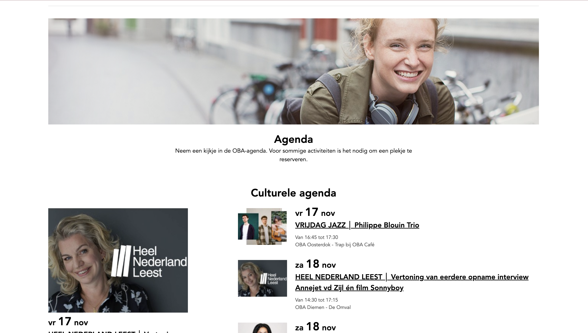
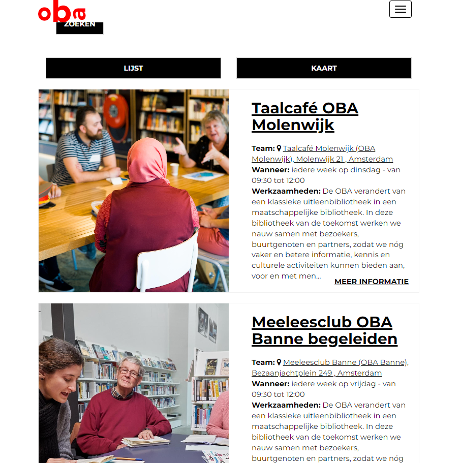

Afbeeldingen
Oba maakt veel gebruik van banners met een ratio van 16:5. Deze afbeeldingen worden als background-image gebruikt. Verder hebben bijna alle afbeeldingen een ratio van 4:3. Op alle afbeeldingen zijn mensen afgebeeld die gebruik maken van producten van de oba. Het is belangrijk dat er veel verschillende soorten mensen worden gebruikt, omdat oba het diverse Amsterdam moet aanspreken.


Logo’s
Voor oba corporate wordt het basislogo gebruikt. Hoofdkleur is rood. Om een kleurig palet te krijgen wordt zwart niet meer als tweede kleur gebruikt, maar zijn er vier voorkeurskleuren uitgekozen. Uitingen zijn bij voorkeur tweetalig (Nederlands en Engels).
logo, vestigingen, submerken, producten & diensten
|
laag 1: corporate logo rood, wit, zwar, grijs |

|
|
laag 2: vestiging rood + grijs |
|
|
laag 3: submerk kleur + zwart |

|
|
laag 4: producten en diesten zwart + extra kleurenpalet |
|
|
laag 5: samenwerken kleur + zwart |

|
Meer voorbeelden


Layout
De layout van de oba moet altijd beginnen met bovenaan een banner die het hele scherm vult, waarna daaronder een kolom van 2 of 3 blokken met plaatjes en/of tekst is.
Qua responsibility, worden de 2 of 3 kolommen gekrompen in 1 kolom wanneer je de website op je telefoon bekijkt.
Afbeelding & tekst
Tablet
Er is nog een klein verschil tussen de layout van een tablet en telefoon als je kijkt naar afbeeldingen met tekts er naast.
Bij een tablet heb je 2 kolommen waarbij de afbeelding de zelfde grootte heeft als de kolom er naast.

Mobile
Bij een telefoon moet de tekts onder de afbeelding komen. De afbeelding mag dan ook wat groter worden weergegeven.